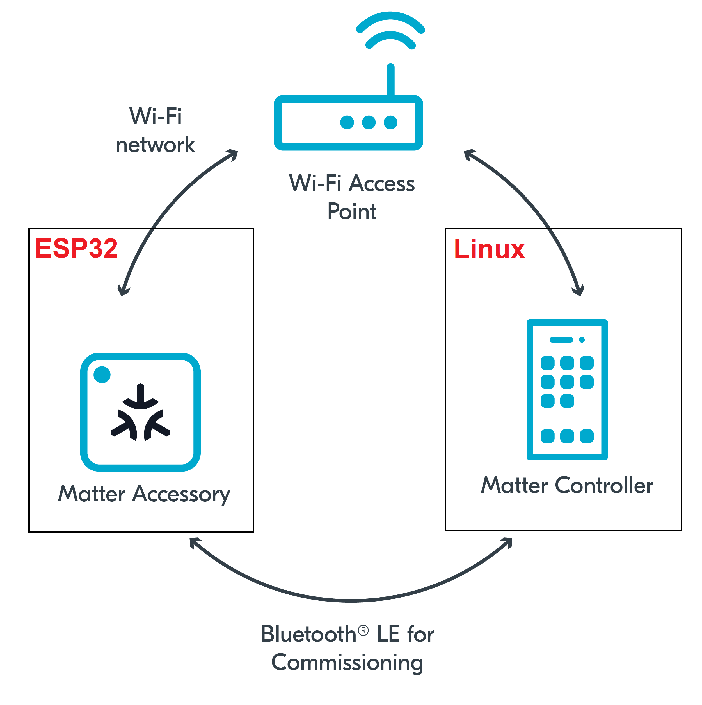

In this codelab we will show you how you can provide Over The Air software updates (OTA) for your ESP32 matter app.
In this codelab, you will:

In this CodeLab we will run a Matter Latter on a ESP32 microcontroller, the OTA provider on Linux. This will allow us to provide OTA updates and we will learn how to use the OTA feature of the Matter protocol.
This set of Codelabs will use Ubuntu 22.04 on a Amd64 based architecture.
You will need
Ubuntu 22.04 with a Bluetooth interfaceThe total codelab will take approximately a Duration of 30 minuates to complete.
You should have built the Matter switch in a previous codelab.
cd esp-idf
source ./export.sh
cd ..
cd esp-matter
source ./export.sh
cd ~/Projects/starter-esp-matter-app/
idf.py -p /dev/ttyUSB0 erase_flash
idf.py -p /dev/ttyUSB0 flash monitor
** replace the path with your device path
In this section we will run a ESP32 matter light application (light switch app) and control with an administrative tool called the chip-tool that acts as a matter controller. We will read the current software version.
rm -fr /tmp/chip_*
Note: removing the /tmp/chip* files can sometimes clear up unexpected behaviours.
./out/host/chip-tool pairing ble-wifi ${NODE_ID_TO_ASSIGN} ${SSID} ${PASSWORD} 20202021 3840
If everything is working you should see output logs and you should see that the commissioning was successful
[1683309736.149316][15:17] CHIP:CTL: Successfully finished commissioning step 'Cleanup'
[1683309736.149405][15:17] CHIP:TOO: Device commissioning completed with success
In the same shell window, we will read the software-version of the Matter accessory using the following command:
./out/host/chip-tool basicinformation read software-version 1 0
In the output logs, you should see that the Vendor Name
[1682445848.220725][5128:5130] CHIP:TOO: SoftwareVersion: 1
from
# CONFIG_APP_PROJECT_VER_FROM_CONFIG is not set
to
CONFIG_APP_PROJECT_VER_FROM_CONFIG=y
idf.py menuconfig
Set the CONFIG_DEVICE_SOFTWARE_VERSION_NUMBER option. (Component config -> CHIP Device Layer -> Device Identification Options -> Device Software Version Number)
Software Version String Set the CONFIG_APP_PROJECT_VER option. (Application manager -> Get the project version from Kconfig)
Ensure to increment that software version number i.e. 2
(Component config -> CHIP Core -> Enable OTA requestor)
idf.py menuconfig
(Component config -> CHIP Device Layer -> Matter OTA image)
Do idf.py build (but dont flash)
idf.py build
Confirm that the ota image is produced in the build folder such as "build/light-ota.bin"
scripts/build/build_examples.py \
--target linux-x64-ota-provider-ipv6only \
build \
&& mv out/linux-x64-ota-provider-ipv6only/chip-ota-provider-app out/host/chip-ota-provider-app \
&& rm -rf out/linux-x64-ota-provider-ipv6only
;;
./out/host/chip-ota-provider-app --filepath ~/Projects/starter-esp-matter-app/build/chip-lighting-app-ota.bin
./out/host/chip-tool pairing onnetwork-long 2 20202021 3840
./out/host/chip-tool otasoftwareupdaterequestor announce-otaprovider 2 0 0 0 1 0
The OTA Requestor application with node ID 1 will process this command and send a QueryImage command to the OTA Provider with node ID 2, as specified in the AnnounceOTAProvider command.
[1707424999.215964][142792:142792] CHIP:DMG: AccessControl: checking f=1 a=c s=0x0000000000000001 t= c=0x0000_0029 e=0 p=o
[1707424999.216085][142792:142792] CHIP:DMG: AccessControl: denied
./out/host/chip-tool accesscontrol write acl '[{"fabricIndex": 1, "privilege": 5, "authMode": 2, "subjects": [112233], "targets": null}, {"fabricIndex": 1, "privilege": 3, "authMode": 2, "subjects": null, "targets": [{"cluster": 41, "endpoint": null, "deviceType": null}]}]' 2 0
Entry 1: This is the original entry created as part of commissioning which grants administer privilege to the node ID 112233 (default controller node ID) for all clusters on every endpoint Entry 2: This is the new entry being added which grants operate privileges to all nodes for the OTA Provider cluster (0x0029) on every endpoint
In the example above, the provider is on fabric index 1 with provider node ID being 2
./out/host/chip-tool otasoftwareupdaterequestor announce-otaprovider 2 0 0 0 1 0
The OTA should start. Wait for the process to finish. It could take some time!
In the same shell window, we will read the software-version of the Matter accessory using the following command:
./out/host/chip-tool basicinformation read software-version 1 0
In the output logs, you should see that the Vendor Name
[1682445848.220725][5128:5130] CHIP:TOO: SoftwareVersion: 2
You should stop the switch-app process by using Ctrl-] in the first esp32 monitor window, the light-app process by using Ctrl-] in the second esp32 monitor window and then run idf erase flash.
It also a great habit to clean up the temporary files after you finish testing by using this command:
rm -fr /tmp/chip_*
Note: removing the /tmp/chip* files can sometimes clear up unexpected behaviours.
Checkout the official documentation [Espressif Matter SDK documentation here: ] (https://docs.espressif.com/projects/esp-matter/en/latest/esp32/)
Also check out the Project CHIP Matter SDK repo Project Chip - ConnectedHomeIp